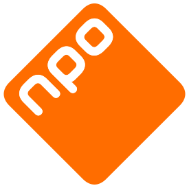
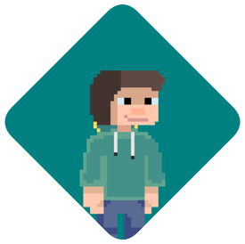

Over deze app
Met de NPO Radio Switcher kan je automatisch wisselen tussen NPO radio zenders. Wil je bijvoorbeeld om 2 uur naar NPO radio 1 luisteren maar om 3 naar NPO3FM, dan kan deze app dat automatisch voor je doen.
NPO Radio Switcher is geen commercieel project en is volledig gratis. geld verdienen is nooit een intentie geweest en zal er nooit een worden.
Dit project heeft geen link met NPO of enig van de omroepen die daarbij horen. Alle afbeeldingen, logos en actuele informatie is van en door de NPO en/of de daartoe behorende omroepen.
NPO Radio Switcher is op geen enkele manier eigendom van of verwant aan de NPO.
Er wordt geen enkele garantie gegeven op NPO Radio Switcher.
NPO Radio Switcher is volledig gratis en open source met een MIT licentie, de achterliggende API (van de NPO) is niet open source.
Alle afbeeldingen, logos en actuele informatie door:
 Nederlandse Publieke OmroepOpensource broncode te vinden op:
Gemaakt door:
 Terebo